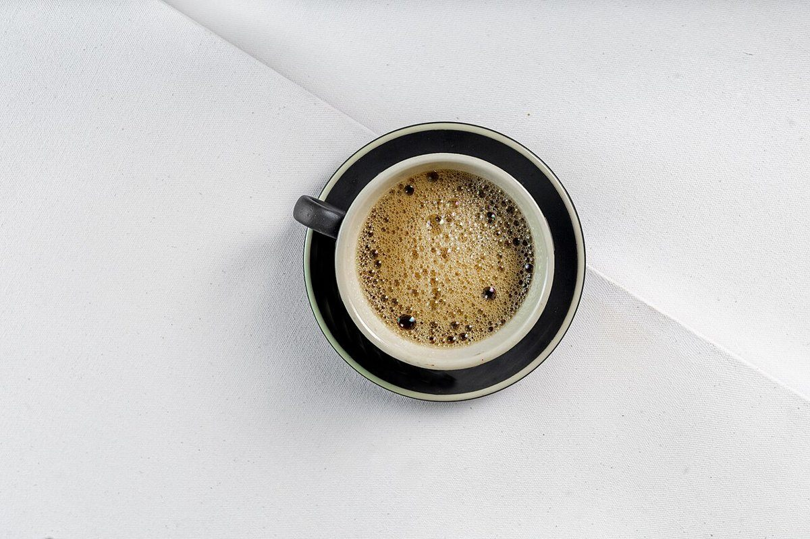
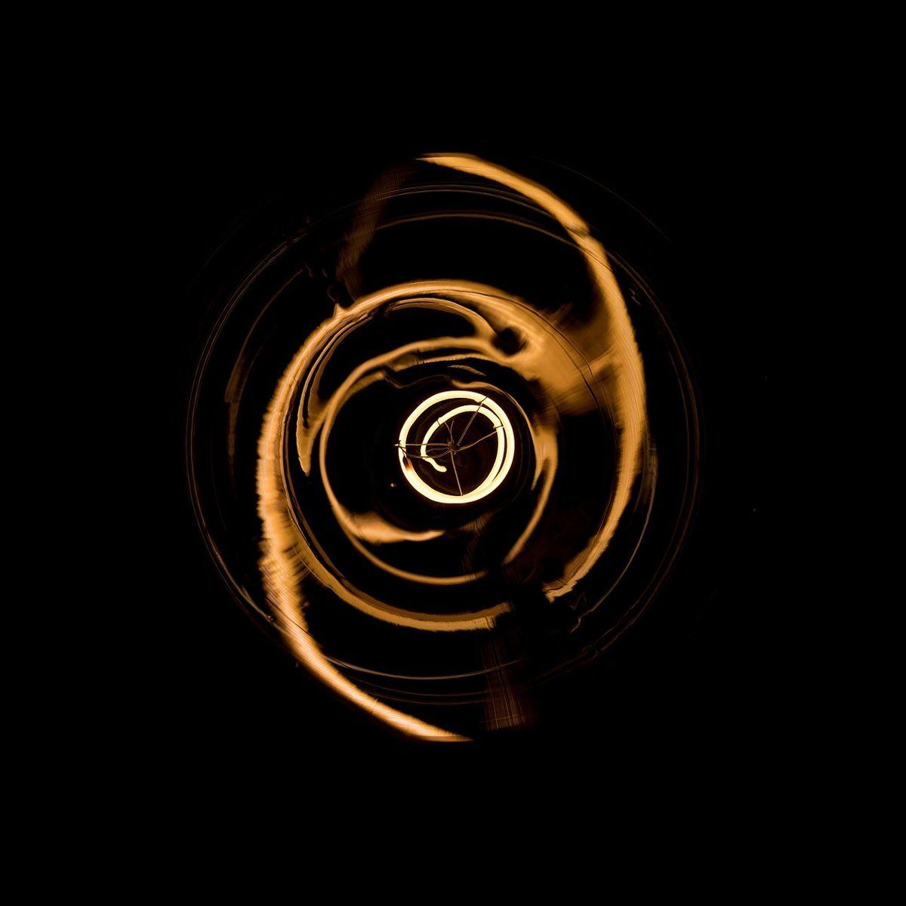

制作側の連想
「Pause」と「ippuku」を、一時停止ボタンに見立てて
お店の名前の由来は分かりません。制作側は「Pause(一時停止)」と「ippuku(一服)」という言葉から、慌ただしい毎日の再生をいったん止めて、ひと息つく時間を連想しました。そこでこのサイトは、音楽プレーヤーの「一時停止」と曲順(トラック)になぞらえた作りにしています。お店の理念・由来とは無関係の、制作側の連想です。
プレイリスト
5つのトラックで案内します
時間表示の「--:--」は演出で、実際の時間・営業時間とは関係ありません。
ジャケット写真(イメージ)
止まっている時間の、いくつかの情景
写真は鹿嶋市の風景やお店のものではありません。国外・撮影地不明のフリー素材のイメージです。


ご案内
お店のこと(確認できたものだけ)
| 所在地 | 〒311-2222 茨城県鹿嶋市小山1102-18 |
|---|---|
| 電話 | なし |
| 営業時間 | 準備中 |
| 定休日 | 準備中 |
| ご予約 | 準備中 |
| 駐車場 | 準備中 |
| SNS | Instagram @cafe.ippuku |